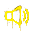
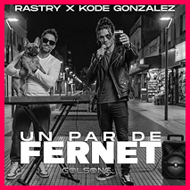

Orígenes
Las primeras generaciones de música sintética presentaban voces poco naturales y entonaciones extrañas.
Estas limitaciones hacían que algunas canciones fueran más fáciles de identificar como artificiales.
¡Presioná y escuchá un ejemplo!


Las primeras generaciones de música sintética presentaban voces poco naturales y entonaciones extrañas.
Estas limitaciones hacían que algunas canciones fueran más fáciles de identificar como artificiales.
¡Presioná y escuchá un ejemplo!

Los modelos actuales pueden generar canciones completas y reproducir con mayor complejidad:
Ya no siempre la diferencia resulta evidente.
¡Presioná y escuchá un ejemplo!

En 2026, el productor argentino Rastry presentó a Kode González,
un artista de cumbia creado mediante inteligencia artificial.
Su caso permite explorar estos avances dentro de un género musical
reconocible para el público argentino.

Según contó Rastry a TN, trabajó durante aproximadamente dos años en el desarrollo de la voz de Kode para conseguir que transmitiera emoción y no sonara vacía o automática.
“Quiero que la gente sienta que le cantó de verdad”.
El desafío consiste en lograr una interpretación que genere una respuesta emocional.

Rastry x Kode Gonzalez
¡Seleccioná con y escuchá otro ejemplo!

La mejora de las herramientas generativas y la producción masiva
de contenido pueden dificultar la diferenciación.
Manuel Cullen, delegado en ATE Cultura,
relaciona este problema con el dumping cognitivo:
la naturalización de la IA puede contribuir a que se debilite
nuestra capacidad de valorar sus particularidades.
¡Presioná el botón en tu teclado para continuar!